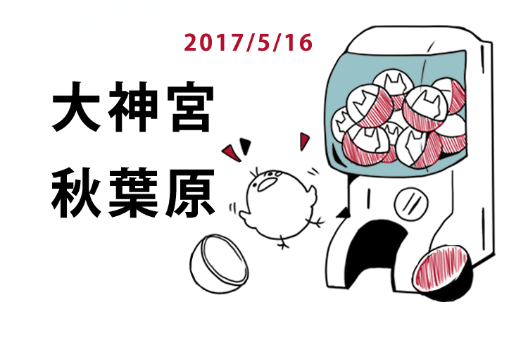
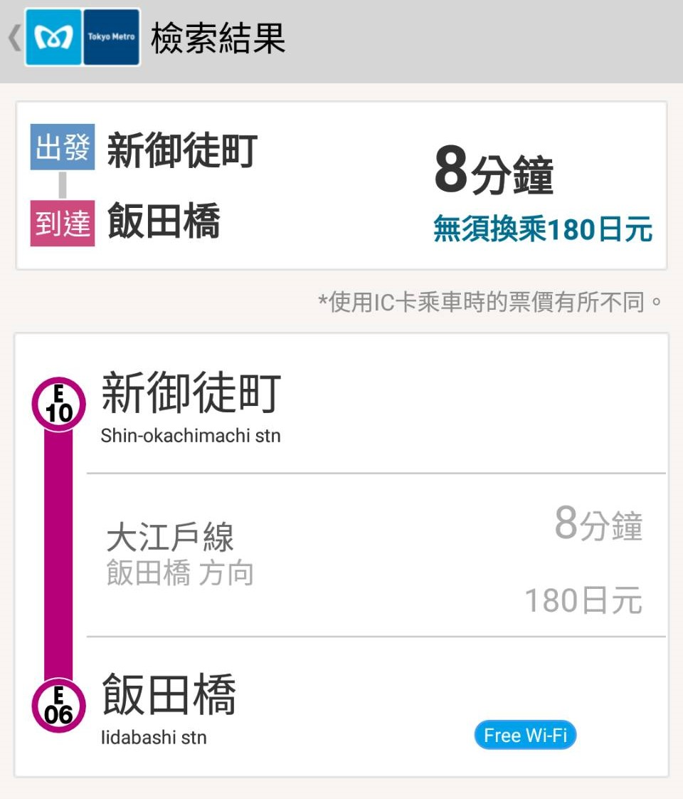
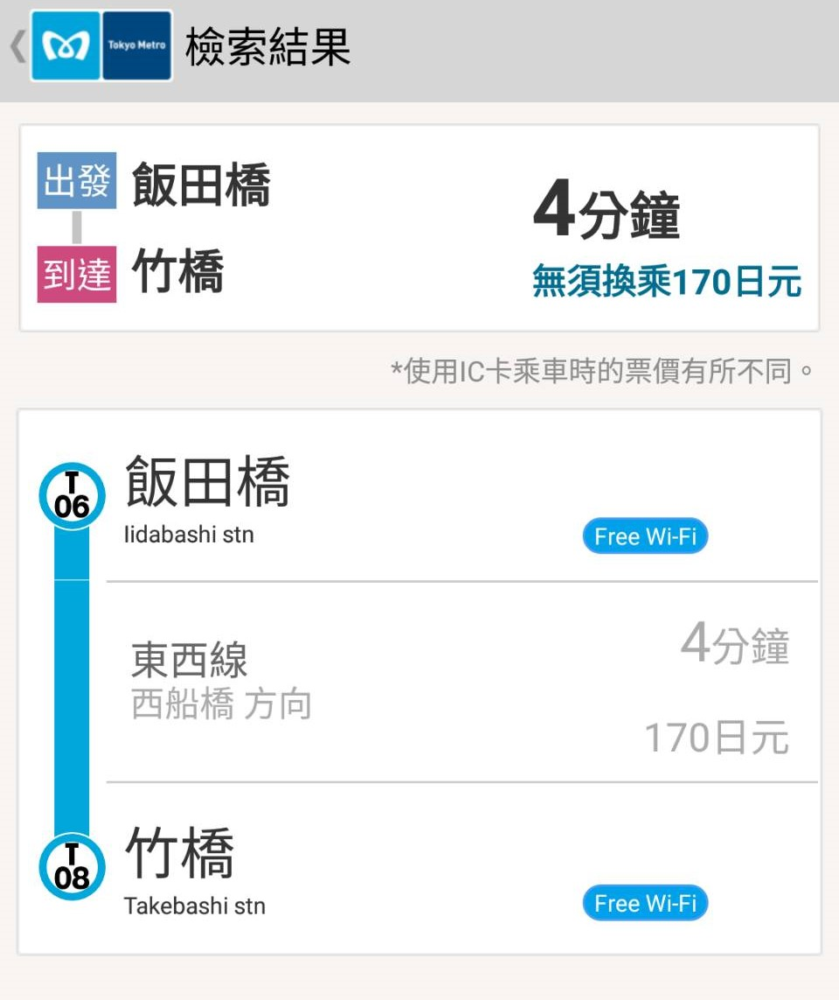
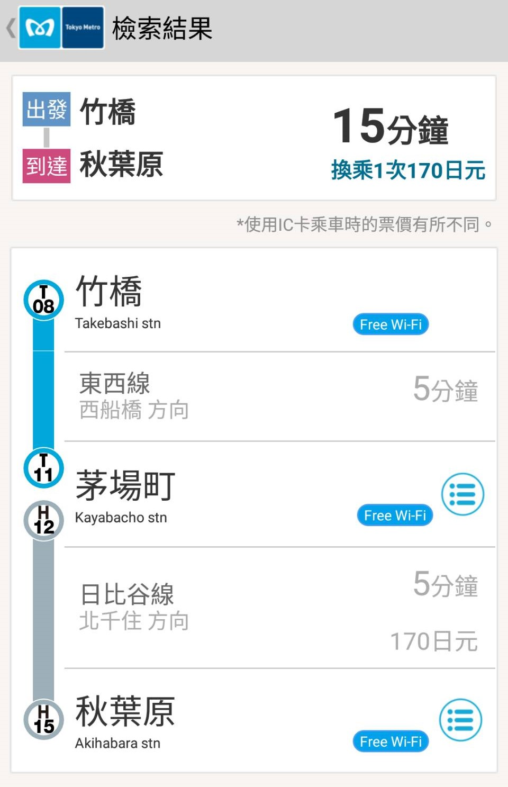
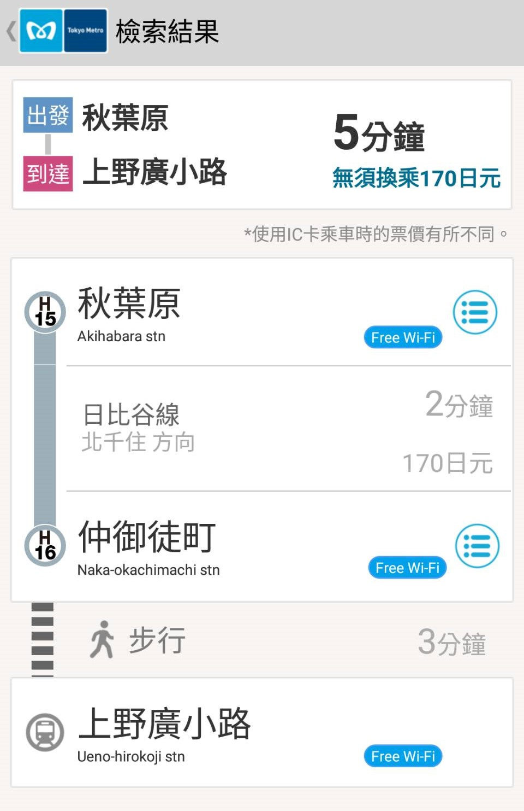

DAY0
行前準備
DAY1
飛東京成田
DAY2
池袋、澀谷
DAY3
大神宮、秋葉原
DAY4
淺草、谷根千
DAY5
六本木
DAY6
回家啦!

08:30
起床梳妝
09:30
離開飯店
從飯店走到
新御徒町車站
(約5分鐘)
MAP
新御徒町 → 飯田橋(約8分鐘，180円) 
大神宮
東京都千代田区富士見2-4-1
MAP
12:30
飯田橋 →
竹橋
(約4分鐘，170円) 
東京國立近代美術館
千代田区北の丸公園3-1
MAP
15:30
竹橋 →
秋葉原
(約15分鐘，170円) 
20:00
秋葉原 →
上野廣小路
(約5分鐘，170円) 
記得要和
淺草愛和服
做確認
DAY4